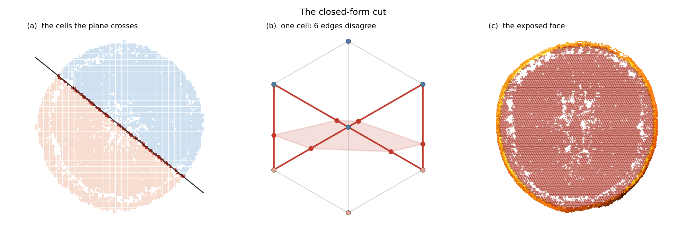
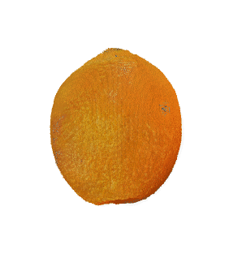
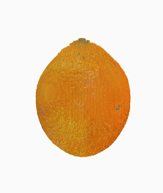
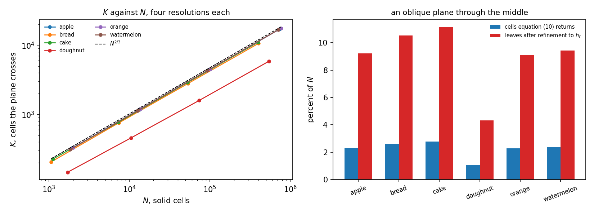
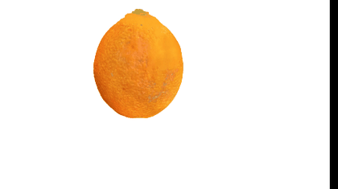

Cuttable Objects on an O‑Voxel Carrier: Photograph-Supervised Interiors and Closed-Form Planar Cutting, Without Splatting
The same two-level lattice, carried all the way to the screen: a flexible dual grid for the surface, a per-cell field for the interior, and a closed-form cut — one rasteriser pass, no Gaussian anywhere
Preprint
Table 1
| metric | O‑Voxel | FruitNinja | GaussianFluent |
|---|---|---|---|
| interior representation | two-level lattice, flexible dual grid | 3D Gaussians | 3D Gaussians |
| interior supervision | photographs, directly | a diffusion model fine-tuned per object | generative priors |
| cut formulation | closed form | nearest-primitive retrieval | nearest-primitive retrieval |
| what draws the cut face | one nvdiffrast pass, no primitive | the Gaussian rasteriser | the Gaussian rasteriser |
| cut face unpainted at 2048 px ↓ | 0.0000% | 2.37%† | 8.29%† |
| through one codec ↓ | 9.7 MiB | 27.3 MiB | 25.6 MiB |
| elements ↓ | 1,162,387 | 3,928,330 | 1,381,100 |
| Storage and element counts are one run of the same codec over all three representations, on the orange for the first two columns and the watermelon for the third, each being what that method has released. Of the 9.7 MiB, 7.8 is the lattice and 1.9 the dual grid. The codec is lzma here rather than zstd, so absolute values are not comparable across runs; the comparison within this one is. Unpainted fractions are counted over the pixels a cut face's own silhouette covers, over four objects and both families for this work, 0 of up to 1,160,889 face pixels each; † baseline figures are from the same script on the same released models. Perceptual distance is reported in section 4 rather than here: this work is scored with supervised and held-out planes separated, and the baselines have not been run under that protocol. | |||
Abstract
Interactive 3D applications — such as planar slicing, cross-sectional inspection and fragment dynamics — require an explicit, realistic internal structure rather than a hollow shell. Existing methods rely either on generative score distillation (which blurs structural membranes and requires expensive per-object fine-tuning) or volumetric splatting (which suffers from boundary bleeding and unpainted void artifacts).
O‑Voxel is not ours: it is the field-free sparse voxel surface of TRELLIS.2 [10], and we use its official encoder without reimplementing it. What we present is what it carries — a cuttable object whose interior comes from photographs and whose cut is closed form, with the representation taken to the screen and no splatting stage anywhere. The exterior is a flexible dual grid whose vertex sits inside its cell rather than on the cell boundary; the interior is a per-cell field read by interpolation; the cut face is the closed-form polygon of a plane against the occupancy. All three go into one rasteriser pass, so nothing is converted at the surface and nothing is drawn as a primitive. Interiors are reconstructed from a sparse set of unaligned 2D cross-section photographs, without generative priors, per-object fine-tuning or camera pose estimation.
Through one codec the representation is 9.7 MiB against 27.3 and 25.6 for two Gaussian baselines, of which 1.9 MiB is the dual grid the splatted pipeline does not store — a 24% surcharge, and what buys the surface its sub-cell placement. A cut face at 2048 px leaves no pixel unpainted on any object or family measured, because there are no primitives to fall below a pixel.
We report perceptual distance with the supervised and held-out planes separated, because a single mean hides which one moved. That separation exposes the representation's clearest open problem: the transverse family generalises to planes it never saw at no cost, and the longitudinal family does not. Section 4.5 reports thirteen attempts on it, of which one moved the measure beyond the spread of a repeat and two direct hypotheses were falsified. Section 4.6 reports three configuration defects that no score caught and one figure did.
1 Introduction
Motivation. Standard 3D reconstruction from exterior views yields a hollow shell. However, interactive downstream applications — including interactive planar slicing, cross-sectional revealing, and dynamic fragment simulation — fundamentally demand an explicit, physically coherent interior. What is demonstrated here is the planar case: a half-space cut, resolved in closed form. A curved or partial incision is outside the operator as specified, and section 5.2 says so. When an object is sliced, the exposed cross-section must exhibit crisp structural detail rather than empty space or blurred approximations.
Limitations of prior work. Existing interior synthesis approaches fall into two main paradigms:
- Generative score distillation. Distilling 2D diffusion priors averages gradients over diffusion timesteps, acting as an aggressive low-pass filter that washes out delicate internal membranes. Recovering these details requires expensive per-object fine-tuning.
- Volumetric splatting. Relying on continuous 3D Gaussians creates an inherent trade-off between coverage and boundary sharpness. This frequently leaves unpainted void artifacts (up to 8.29% unpainted) and lacks explicit geometry for well-defined planar cutting.
Our approach. We present a generative-free framework to reconstruct high-fidelity 3D interiors directly from sparse, unaligned 2D cross-section photographs.
- Decoupled lattice to voxel grid. We decouple the visible exterior surface from an internal two-level occupancy lattice. This lattice seamlessly discretizes into an explicit voxel grid, implicitly reconciling inconsistent slices via global occupancy without camera poses.
- Closed-form cutting and physics interface. The explicit voxel discretization allows arbitrary planar cuts to be computed analytically via cell-edge intersections. This guarantees machine-precision planarity, zero boundary bleeding, and direct integration with grid-based physics solvers (e.g., MPM) without intermediate mesh extraction.
1.1 Key contributions
- Decoupled volumetric representation. An occupancy lattice decoupled from the exterior surface, enabling compact storage (9.7 MiB, of which 1.9 is the dual grid) and high-resolution voxelization.
- Pose-free, generative-free supervision. Direct optimization from unaligned cross-section photographs without diffusion priors or camera calibration, achieving superior fidelity. Perceptual distance is reported in section 4 with the supervised and held-out planes separated, because the two halves move independently and a single mean hides which one did.
- Closed-form planar cutting. Exact analytical cutting via voxel-edge intersections, leaving no pixel of a cut face unpainted at 2048 px while maintaining strict 2-manifold topology.
- Physics-ready topological partitioning. A mesh-free interface that derives piece identity, collision boundaries, and strict mass conservation directly via integer lattice operations.
2 Related work
2.1 Interior generation from 2D generative priors
Score distillation and what it filters. Optimising a radiance field or a Gaussian set against a pre-trained diffusion model through score distillation [27] averages the score over timesteps drawn uniformly from its range, which acts as a low-pass filter on the target. We measured the consequence for cross-sections: under either prompt and at any run length the distilled target for an orange is a smooth disc with a single bright centre, and the membranes, fibres and seeds that a section consists of are absent. Fine-tuning the diffusion model on the object's own cross-section photographs restores them, and that is what the closest prior work does; the checkpoints involved, here and there, are latent diffusion models [26].
Fine-tuned interior generators. FruitNinja [3] supervises an object's interior with depth-conditioned diffusion on cross-sections and stores it as opaque atomic Gaussians, the diffusion model having first been fine-tuned on photographs of the object being reconstructed. We take the same photographs and make them the target, so the supervision is images of the object rather than a model of images of the object; the interior generator, which is the part that paper contributes, is then not needed at all. What we contribute is what holds the result. The lattice it is quantised onto, and the baseline every number here is measured against, is a Gaussian model quantised as it stands; the representations it descends from are Gaussian splatting [1] and radiance fields [2]. Solid texture synthesis [29] asked the same question before diffusion existed, and InFusion [30] and InnerGS [31] answer it for scenes rather than for objects that are cut.
2.2 Volumetric representations and solid textures
Volumes before primitives. Representing an object by what fills it rather than by what bounds it is older than any of the work above. Direct volume rendering displayed surfaces from sampled volumes without extracting one [56, 57], and volume graphics argued the position explicitly: a voxel model carries interior structure that a boundary model does not have and cannot acquire [58]. The cost was always resolution, and the structures that answered it are the ones this lattice is built from — adaptively sampled distance fields refine only where shape demands it [59], sparse voxel octrees make an empty majority free to store and to traverse [61], and VDB gives a sparse volume dynamic topology and \(O(1)\) random access [60]. What has changed is the supervision available for the contents, not the container: none of that literature had a way to say what the inside of a particular orange looks like, and a photograph of a cut one now does.
Structured Gaussians. Attaching primitives to a structure rather than letting them float is the line this work sits in: anchors on a sparse voxel grid [12], a dense structured cube [13], an octree with level of detail [14], and before them the octree and voxel grids that accelerated radiance fields [15, 16] and the hash encoding that replaced them [17]. What those share is that the structure serves the renderer. Here it serves the volume, and the renderer is given its own representation.
Surface representations for generated 3D. TRELLIS.2's O‑Voxel [10], the surface stage of a structured-latent 3D generator [11], is a field-free sparse voxel surface: a Flexible Dual Grid [63] in which every active voxel carries a dual vertex and grid-edge intersection flags, handling open, non-manifold and fully enclosed internal surfaces. We use its official encoder without reimplementing it. Everything reported here is rendered through it. That is the difference between this page and the splatted pipeline, which converts at the surface and draws the lattice’s own primitives through the Gaussian rasteriser: here the dual grid is the surface, the cut face is the closed-form polygon of the plane against the occupancy, and the two go into a single nvdiffrast pass so the depth test composes them.
Dual contouring. The dual vertex is a quadric's minimiser [5], and quadrics are additive over their planes. That is what lets an adaptive grid be built by collapsing, and the collapse's error be read off the same quadric that placed the vertex. Marching cubes [4] is the alternative that places vertices on edges instead, and cannot represent a feature inside a cell — on an occupancy function its vertex is always the edge midpoint, which is measured as the source of the staircase in [64]; quadric error metrics [8] are where the additivity comes from, and dual marching cubes [6] and feature-sensitive extraction [7] are the two nearest relatives of what is used here.
Sub-pixel primitives and antialiasing. A primitive whose screen-space footprint falls below the sampling rate disintegrates as resolution rises, and the fix is a minimum-scale filter: Mip-Splatting caps the extent at the sampling rate for exactly this reason [53], analytic integration does it differently [54], and the framing that a primitive is a reconstruction filter which must match the sampling rate is older still [55]. The released models we measure carry no such filter. Section 4.1.2's claim is therefore that a cube needs no minimum-scale parameter, not that a Gaussian cannot be given one.
Compressing a Gaussian model. Every storage figure here counts fields at float32 on both sides, which is a file format rather than a representation. The literature that closes that gap is not small: sensitivity-aware vector quantisation [40], learnable masking with residual quantisation [41], spherical-harmonic distillation [42], hash-grid context modelling [43], and putting Gaussians on a grid precisely to make them compressible [44], surveyed in [45]. Reported reductions run from fifteen-fold to seventy-five, and primitive count itself can be cut an order of magnitude at equal quality [46, 47]. We do not run any of them, and section 4.1 states what that leaves owed.
What these share is that the structure serves the renderer: a grid, an octree or a hash accelerates or compresses a primitive set whose job is still to be splatted. The conflict this work is about survives all of them, because a kernel wide enough to close volumetric pinholes bleeds across internal materials and a narrow one leaves voids, and a point primitive has no surface for a slice to be defined against. We keep the structured grid and remove the rendering primitive from the interior instead: discrete occupancy with one feature per cell for the volume, and one primitive per cell for what is seen.
2.3 Virtual cutting and physical simulation
What is old here, and what is not. The machinery of the cut is classical: clipping a cube by a plane into a three-to-six-sided polygon is textbook, connected components on a grid is textbook, and dual contouring is two decades old. Every one of those was worked out on volumetric data that already existed — a segmented scan, a tetrahedral mesh, a modelled field. What has not existed is that data for an object reconstructed from photographs, and it is the absence rather than the algorithms that has kept these operations away from radiance-field assets. This paper's claim is about supplying it: an occupancy with an interior that a dozen unregistered photographs can specify, on which the classical operations then apply unchanged and exactly. The contribution is the supervision and what the volume does to it, not a new way to intersect a plane with a cube.
Cutting in medical simulation. Interactive cutting was posed as a problem by surgical simulation long before it was posed for reconstructed assets, and the constraints there are the ones that shaped every later formulation: the cut is arbitrary, it must be resolved at interactive rates, and the object has to remain simulable afterwards [51]. That line is where progressive cutting, element subdivision and the state machines for cutting tetrahedra come from, and it is also where the assumption this work departs from is clearest — those methods begin from a volumetric mesh that a modeller or a scan produced, and a radiance-field asset does not have one.
Cutting a discretisation. Keeping a coarse volumetric discretisation and representing the cut surface analytically inside the cells it crosses is two decades old in graphics: the virtual node algorithm duplicates a cut element so each copy carries one side [48], arbitrary cutting of deformable tetrahedra produces exact polyhedral fragments [49], and extended finite elements formulate the same idea as enrichment [50], with the surgical-simulation line starting earlier [51]. What has not been available before is any of this on a photogrammetric radiance-field asset, because such an asset has no volumetric discretisation to cut. Fracture by continuum damage [52] is the alternative separation mechanism GaussianFluent uses.
Physics on primitives. PhysGaussian [18] simulates Gaussians with MPM, and VR-GS [22] builds an interactive system on that line. We keep the existing particle set and give it piece identity, so subdividing a cut band multiplies leaves and not particles. The solver is MPM [19, 20] in the moving-least-squares form [21], and the surface follows it by the same weighted-sum binding that skinning [24] and embedded deformation [25] use, which is why an affine motion is followed exactly.
Mixed materials and fracture. GaussianFluent [23] is the nearest current work and reaches the same two obstacles from the other side: it densifies an interior with generative guidance and then simulates brittle fracture with a continuum-damage MPM, handling mixed-material objects in one solver. Where it makes the interior denser so that a Gaussian representation can carry it, this work removes the rendering primitive from the interior entirely, so the comparison is not which fractures better but what each pays to hold a volume. The material question we reach, whether a shell survives the grid transfer, is one any mixed-material MPM has to answer.
Both lines leave the same gap. Mesh-based cutting needs a volumetric discretisation, which a photogrammetric radiance-field asset does not have; primitive-based cutting has the asset but defines the exposed face by which primitives survive a side test, so its geometry is not something the method states. A two-level lattice has both: a discretisation to cut, and integer occupancy and adjacency that a particle solver reads without an intervening mesh. What this paper establishes about that last point is compatibility rather than accuracy — contact resolves on the same integers, and no dynamics are validated against a reference solver.
2.4 Evaluation
Instruments and their sample sizes. FID [32] and KID [33] against photographs, and CLIPScore [34] for whether the picture reads as the thing. Both distribution metrics are used at sample sizes far below where they are reliable [35, 36], which the results section states rather than works around.
3 Method

One object through the whole method: the two routes, the photographs that supervise the interior, and what a cut produces.
We decouple the surface from the interior. The visible outer hull is carried by a flexible dual grid; the solid interior is a discrete two-level lattice whose cells store latent features rather than explicit primitives. The interior is supervised entirely by sparse, unaligned 2D cross-section photographs, with no pose recovered for any of them, and the representation supports analytical planar cutting at machine precision and direct coupling to a grid-based solver.
3.0 Notation
| symbol | domain | meaning |
|---|---|---|
| \(C_i\) | \(i \in \{1,\dots,N\}\) | coarse cell, side \(h_c\) |
| \(h_c,\; h_f\) | \(h_f = h_c/2\) | coarse and fine cell size |
| \(\mathbf{f}_i\) | \(\mathbb{R}^d,\; d=8\) | per-cell latent feature |
| \(g_\theta\) | \(\mathbb{R}^d \to [0,1]^3\) | shared colour decoder |
| \(\Pi_k = (\mathbf{n}_k, d_k)\) | \(\mathbf{n}_k \in S^2,\; d_k \in \mathbb{R}\) | cutting plane, \(\mathbf{n}_k^\top\mathbf{x} + d_k = 0\) |
| \(e_j\) | \(j \in \{1,\dots,12\}\) | edge of a crossed cell |
| \(\mathbf{v}_j\) | \(\mathbb{R}^3\) | intersection of \(\Pi_k\) with \(e_j\) |
| \(K\) | \(K \ll N\) | cells \(\Pi_k\) crosses |
| \(\mathbf{u}_v,\; w_v\) | \([0,1]^3,\; [0,1]\) | dual vertex offset in its voxel, split weight |
| \(\delta_k,\; \pi\) | \([0,2\pi),\; S_M\) | reference rotation, photograph-to-plane assignment |
3.1 Decoupled representation and initialisation
3.1.1 Problem formulation and the two-level lattice
Let \(\Omega \subset \mathbb{R}^3\) be a solid with boundary \(\partial\Omega\). Any representation that is to be cut must answer three queries: occupancy and material (Q1), the partition a cut induces (Q2), and the surface a cut exposes (Q3).
To decouple spatial topology from appearance we build a two-level axis-aligned lattice \(\mathcal{V} = \mathcal{V}_0 \cup \mathcal{V}_1\). The coarse level \(\mathcal{V}_0\) has spacing \(h_c = L/125\), with \(L\) the longest extent of the bounding box; the fine level \(\mathcal{V}_1\) has spacing \(h_f = h_c/2\) and covers only the skin band adjacent to \(\partial\Omega\). Cell indices, the fine level and the face adjacency \(\mathcal{A}\) are
with \(\mathbf{o} = \min_i \mathbf{x}_i - \tfrac{1}{2}h_f\). The half-cell offset is not cosmetic: a generated lattice puts its cells at \((\mathbf{k} + \tfrac12)h\), so flooring from the minimum lands every cell centre on a boundary and lets floating point decide the side, which on these lattices loses 49% of the cells.
Each cell \(\mathbf{k}\) stores an eight-dimensional latent feature \(\mathbf{f_k} \in \mathbb{R}^8\) and nothing else. Colour is produced by a small globally shared decoder \(g_\theta(\mathbf{f_k})\); occupancy and adjacency are integer lookups. The hull is a dual grid, and it is what every render here is drawn from.
What is stored, and how it is read. The lattice is kept as a sparse list of occupied cells — an integer coordinate and a level tag per cell, with the origin and the two spacings held once — not as a dense array, and not in a tree. A dense occupancy grid exists only inside the fill that builds it and is discarded; two levels fixed in advance make the index an integer division, so there is nothing for an octree or a VDB to accelerate. For the orange that is 682,100 coarse cells and 480,287 fine ones. Under one codec that is 7.8 MiB for the lattice alone and 9.7 MiB once the dual grid is stored with it (Table 1; lzma, not zstd).
Feature lookup is interpolated, and this is the representation’s one real departure. The splatted pipeline returns the feature of the cell containing \(\mathbf{x}\) and nothing else, and argues that the piecewise-constant lookup is load-bearing: a cell holds one value, so two photographs that disagree about the same material are averaged by the representation rather than by a penalty. That argument is sound and it is what this representation gives up. O‑Voxel reads the cut face by trilinear interpolation of the cells around the sample point, which puts part of the reconciliation back into the loss — and buys a field whose value does not jump at a cell boundary, which is what a cut face is made of.
The order of that interpolation is not neutral. Trilinear weights are \(C^0\): the value is continuous across a boundary and its derivative is not, which is a crease at every cell face. The cubic B‑spline basis over the same neighbourhood is \(C^2\) at eight times the gathers, and on the orange it is the only one of eight changes tried that moved the seam measure beyond the spread of a repeat — 1.16 against 1.39 and 1.44 for two runs of the same settings, with the supervised longitudinal score improving from 0.0919 to 0.0858 at the same time. The working notes carry the other seven, which did not.
3.1.2 Two routes to a solid
Two routes produce the solid geometry, and which one an object takes is read off its input rather than chosen.
Route 1, quantise and repair. An existing surface reconstruction is quantised to cells \(\mathcal{O}\), its interior is discarded, and the voids a scan leaves behind its own surface are repaired by a morphological closing followed by a flood fill from outside:
where \(B\) is the one-cell structuring element and \(\mathcal{C}_\partial\) the component of the complement that reaches the bounding box. An optical scan cannot see through the object, so every void behind its surface is a failure to observe rather than a feature: on the orange the quantised occupancy is 884 disconnected pieces and 440,867 cells, and sealing takes it to one piece and 889,183. What is left is inside by construction rather than by a threshold.
Route 2, generate and project. The solid is built analytically from a signed distance field, \(\phi(\mathbf{x}) < 0\), so there is nothing to repair, and the skin is painted by projecting six exterior views \(\pi_i\) onto it with an incidence weight, \(\mathbf{c_k} \propto \sum_i \max(\mathbf{n_k}\cdot\mathbf{d}_i, 0)^4\, I_i(\pi_i(\mathbf{x_k}))\).
On both routes the interior begins at a flat value and every structure inside the object is put there by the photographs of section 3.2.
3.2 Cross-section calibration and pose-free supervision
The interior is supervised by sparse, unaligned 2D cross-section photographs \(\mathcal{I} = \{\mathbf{I}_k\}_{k=1}^{M}\) — between one and ten per family — the orange 3 and 3, the watermelon 10 and 12, the apple 2 and 2, the loaf 3 and 3, the cake 2 and 2, the pomegranate 2 and 2, the doughnut 1 and 1 — for the objects reported here. Nothing about where a photograph was taken is known or recovered. To remove the geometric contradictions between sections, and to keep a plane nobody photographed from degenerating, the system calibrates the references before and during training.
3.2.1 Geometric consistency calibration
Phase alignment within a family. The angular intensity profile \(a_k(\varphi)\) about a section's own centroid is the only thing in a transverse section that is a function of angle alone. It is the mean luminance over an annulus, sampled at \(P = 360\) bins, $$a_k(\varphi_p) = \frac{1}{|A_p|}\sum_{\mathbf{u} \in A_p} \ell\bigl(\mathbf{I}_k(\mathbf{u})\bigr), \qquad A_p = \bigl\{\mathbf{u} : \arg(\mathbf{u} - \mathbf{c}_k) \in \varphi_p \pm \tfrac{\pi}{P},\; 0.25\,R_k \le \lVert \mathbf{u} - \mathbf{c}_k \rVert \le 0.80\,R_k \bigr\}$$ with \(\mathbf{c}_k\) and \(R_k\) the section's own centre and radius. The bounds are not free parameters chosen for a result: inside \(0.25R\) the angle is undefined at the core, and outside \(0.80R\) the radius estimate is least stable at the rim. The family is brought to a common phase by the circular cross-correlation that maximises agreement with the first member, which the DFT gives in closed form:
Rotation is the only degree of freedom used, so nothing a photograph shows is invented or discarded; it appears at a different angle.
What the profile assumes. A one-dimensional circular correlation on an angular profile assumes approximate radial coherence about a topological core, which is what a fruit, a loaf and a cabbage have. On a severely irregular or non-concentric interior the peak of the inverse transform is not sharp and the angle it returns is not meaningful; there the chordal solve of equation (5) is what resolves the rotation, because it constrains the two families against each other on the lines they share rather than against a profile. We have not measured an object of that kind, and section 5.2 records it.
Scale and translation are not free parameters. A registration of a photograph against a volume would have four: an in-plane rotation, a scale and two translations. Here three of them are determined rather than searched. \(\Phi\) in equation (6) fits the reference to the silhouette that \(\Pi_j\) itself renders, so the scale and the centre follow from the cross-sectional moments of the current geometry and change as it changes. Only the in-plane rotation is unconstrained by the object, and that is what equation (4) solves — on a one-dimensional profile, in closed form, once, before training. The registration is one-dimensional not because a smaller problem was chosen but because the other three dimensions are not unknowns.
Chordal consistency between families. A transverse plane and a longitudinal one meet in a one-dimensional chord, and on that chord the two families describe the same physical line. Left alone they disagree there, and a plane neither family supervised — a 45° cut, say — inherits the average of two structures at different phases, which is no structure at all. The disagreement on those chords is a function of the phases and the assignment alone, so it is minimised before any gradient is taken:
Equation (5) is a mixed problem: \(\pi \in S_M\) is discrete and \(\{\delta_k\} \in [0,2\pi)^M\) continuous, and they are coupled through the chordal constraints, so neither can be fixed while the other is solved. It is solved exactly rather than relaxed, by enumerating the discrete part and running coordinate descent over 72 candidate angles inside each enumeration. \(M\) is the photograph count of the family: at most ten here, two or three on four of the seven objects, and one on the doughnut, where \(S_1\) is trivial.
Moment-based fitting to the render. The renderer produces the section and its alpha silhouette \(\alpha_j\) for the training plane \(\Pi_j\). A 2D similarity transform is then computed in closed form from the centroid \(c(\cdot)\) and the second-moment radius \(r(\cdot)\) of each:
This is what replaces a pose. The photograph is fitted to the silhouette the plane renders, rather than the plane being fitted to the photograph, and the target therefore cannot ask for material where the object has none.
Continuous assignment across depth. Dealing the photographs to planes in blocks gives adjacent planes the same target, so the interior has no reason to differ between them and every reason to change where the block does. A plane at \(t = j\,M_f/N_f\) instead takes the photograph \(\lfloor t \rfloor\) and the next, both brought onto a common disc by \(\Psi\) and mixed at the fractional part:
3.2.2 Jittered sampling and alternating optimisation
The aligned target is held by a stop-gradient. The plane depth is a random variable rather than a constant, \(d_j \sim \mathcal{U}(c_i - J\Delta,\, c_i + J\Delta)\) with \(J = 0.5\) and \(\Delta\) the slot width, so the objective is a Monte Carlo expectation over a continuous distribution of planes, estimated by one draw per plane per step:
The supports of \(\{\Pi_j\}\) then union to a slab of thickness \(\Delta\) about each nominal depth rather than to \(P\) surfaces of measure zero inside it. Measured on the orange, the fraction of solid cells that receive gradient rises from 32.2% at fixed depths to 95.1% under the draw, with 333 cells (0.0%) never reached at any draw. Blind-spot coverage is a property of the expectation, not an augmentation heuristic.
The optimisation is over the per-cell features \(\mathcal{F}\) and the shared decoder \(\theta\), and over nothing else: there is no plane pose among the parameters and no gradient reaches \(\Pi_j\), because \(\Pi_j\) is not an estimate of where a photograph was taken. The loss is taken on \(N_c = 6\) random crops of side \(w = 128\), combining structural similarity, a photometric term and a per-crop band statistic:
The objective the reported runs minimise is that loss summed over both families of planes, with one further term. \(\mathcal{S}\) is the set of skin cells, fixed by \(\texttt{occupancy}\)’s own surface rule and shared with the exterior stage, and \(\hat{\mathbf{c}}\) is what the exterior put on them; the term holds the decoder to that while the interior is free to move underneath it:
The implementation carries three more terms — a gradient-matching loss, a floor on luminance, and a field prior on neighbouring cells. The first two are at weight zero in every run reported here. The field prior is not. Every run in Table 2 carries it at weight 0.1, weighted four times as heavily on the two lattice axes perpendicular to the polar axis. That is where face-sharing neighbours disagree most: the transverse planes stack along the polar axis and pin that direction directly, so the mean colour step between neighbours along it is 0.0562 against 0.0989 and 0.0971 across it.
How an unregistered photograph reaches a cell. The photographs carry no pose and none is estimated. A photograph enters only as \(\mathbf{T}_j\), which equation (6) fits to the silhouette that \(\Pi_j\) itself renders, and equation (8) then holds it by a stop-gradient, so nothing differentiates through the fit. The gradient that does flow runs backwards through the rasteriser to the colour of every cell the cut polygon samples, from there through the shared decoder \(D_\theta\) to that cell’s 8-dimensional feature \(\mathbf{f}_v\), and through \(\theta\) to every other cell at once. The occupancy is what makes this global rather than per-plane: a cell belongs to the object, not to a photograph, so two planes that cross the same cell write to the same feature and their disagreement is resolved by that cell holding one value — which is the same mechanism, stated in section 3.2.2, that makes an explicit consistency penalty unnecessary.
The alignment is not differentiated, and it is not a choice to withhold a gradient. \(\Phi\) is built by operations that have no derivative: the reference is resampled by a Lanczos kernel and pasted at an integer offset, and the render reaches it only after leaving the graph. The \(\mathrm{sg}[\cdot]\) in equation (8) records that rather than imposing it. The phases \(\delta_k\) and the assignment \(\pi\) are solved once before training and never move; the optimisation is over \(\mathcal{F}\) and \(\theta\) alone.
What happens if it is differentiated. The objection is that \(\Phi\) ought to be learned jointly, so we implemented it: three parameters per plane, a scale and a translation, applied to the same reference by a differentiable sampler, initialised at the moment fit so the arm begins exactly where the method begins, and optimised by the same loss. The alignment does not stay put. Over 200 iterations the scale travels \(|\Delta \log s| = 2.43\) from its initialisation — a factor of eleven, and ninety-five on the worst plane — which is 3.4 times the distance a random walk of the same optimiser and step count would cover, so it is a persistent gradient and not noise. The translation saturates at 1.27 in grid units, which is where the target leaves the frame, and the pull transfers to the scale.
The volume pays for it. Held-out sections score 0.5585 of DreamSim against 0.0763 for the method as specified, and the failure is legible rather than numerical: the optimiser shrinks each target until it is white, the loss falls because a white render matches a white target, and the interior is erased. What survives is the peel, which equation (10)’s skin term holds in place and this shortcut cannot reach. A target that can move is a cheaper thing to optimise than a volume that has to be right, and the geometry is what stops it moving.
What reconciles contradictory references is not a consistency penalty but the geometry: a cell has one value and every plane that crosses it reads that value. We implemented the explicit alternative — reconciling each pair of targets along the chord their planes share — and report it because it failed in both of its modes, costing 0.012 DreamSim against a control when the two targets are averaged and 0.012 more when one family is made to win.

The cells a plane crosses, one cell's contributing edges and its polygon, and the whole exposed face.

The planar cut, as four states of the orange's own lattice. (a) \(\Pi_k\) against the lattice: 770,182 solid cells, of which \(K = 17{,}855\) satisfy \(|\mathbf{n}_k^\top\mathbf{c}_i + d_k| \le \tfrac{\sqrt{3}}{2}h_c\) and are drawn in red. (b) one crossed \(C_i\) in isometric view: its twelve edges \(e_j\), the four roots \(\mathbf{v}_j\) where \(\Pi_k\) meets an edge, and the convex polygon they bound. (c) the sign of \(\mathbf{n}_k^\top\mathbf{x} + d_k\) over one slice of the integer lattice, labelled into its two connected components. (d) the exposed face: all 17,855 polygons, each coloured by the interior field sampled at its own position. Worst plane-equation residual over every vertex of every cut, four planes on each of seven objects: \(8.88\times10^{-16}\).
3.3 Closed-form planar cutting operator
Given an arbitrary plane \(\Pi = (\mathbf{n}, d)\), the exposed face and the fragment topology are produced analytically, rather than approximated by retrieving the primitives nearest the plane without an explicit planar clip.
The crossed band, and the sign of a cell. The cells the plane crosses are located by the separating-axis test
and every other cell carries the sign of its centre, \(q(\mathbf{k}) = \operatorname{sgn}(\mathbf{n}\cdot\mathbf{x_k} + d)\). An adjacency is kept only where the two signs agree, \(\mathcal{E} = \{(\mathbf{k},\mathbf{k}') \in \mathcal{A} : q(\mathbf{k}) = q(\mathbf{k}')\}\), so the pieces are the connected components of the surviving graph and nothing else has to be decided.
The exposed face. For each crossed cell \(c\), the edges of its twelve whose endpoints straddle the plane are intersected exactly, and their points are coplanar and convex:
The exposed surface is \(\mathcal{P} = \bigcup_{c \in \mathcal{B}} \mathcal{P}_c\). Every vertex satisfies the plane equation to machine precision, so the face is planar by construction rather than by fitting; under uniform refinement of the band the polygons meet edge to edge, with no T-junctions and no non-manifold edges.
The two degenerate configurations need no special case. A plane through a cell's vertex gives coincident intersection points, which merge at a tolerance of \(10^{-6}h\) when the polygons are welded. A plane lying in a cell's face gives no straddling edge at all, because the sign test is strict, so that cell contributes no polygon and the partition simply follows the lattice face that is already there.
Locality. A cut changes adjacency only inside the crossed band \(\mathcal{B}\); everywhere else the graph is reused unchanged, so the geometry costs \(\mathcal{O}(K)\) in \(K = \lvert \mathcal{B} \rvert\) rather than in the size of the object.
Algorithm 1
| a plane arrives; the pieces and the exposed face leave | cost |
|---|---|
| 1 \(\mathcal{B} \leftarrow \{c : |\mathbf{n}\cdot\mathbf{x}_c + d| \le \tfrac12 h\sum_a|n_a|\}\) the crossed band, equation (11) | \(\mathcal{O}(N)\) |
| 2 refine every \(c \in \mathcal{B}\) to \(h_f\) one level at the cut, which is what removes T-junctions | \(\mathcal{O}(K)\) |
| 3 \(q(\mathbf{k}) \leftarrow \operatorname{sgn}(\mathbf{n}\cdot\mathbf{x_k} + d)\) for every leaf | \(\mathcal{O}(N)\) |
| 4 \(\mathcal{E} \leftarrow \{(\mathbf{k},\mathbf{k}') \in \mathcal{A} : q(\mathbf{k}) = q(\mathbf{k}')\}\) drop the adjacencies the plane separates; the rest is reused | \(\mathcal{O}(K)\) |
| 5 pieces \(\leftarrow\) connected components of \(\mathcal{E}\) | \(\mathcal{O}(|\mathcal{E}|\,\alpha)\) |
| 6 for each \(c \in \mathcal{B}\): intersect its twelve edges, order the points by angle about their centroid, emit \(\mathcal{P}_c\) equation (12) | \(\mathcal{O}(K)\) |
Only step 3 touches the whole object, and it is a sign evaluation rather than a traversal; every step that builds geometry is linear in the crossed cells. Reusing the adjacency outside the band rather than rebuilding it is what takes a cut on the orange from 13.76 to 2.91 seconds.
3.4 Simulation interface and contact
The lattice couples directly to a background-grid solver such as the material point method, with no marching cubes and no tetrahedralisation.
- Contact predicate. Inside the cut band a leaf-containment test alone
reports penetration between two pieces that are merely adjacent, because a leaf the plane
straddles belongs to one piece while part of its volume lies on the other side. Pairing it
with the plane's own sign removes exactly that band:
$$\operatorname{occ}_P(\mathbf{x}) = \bigl[\, \operatorname{leaf}(\mathbf{x}) \in P \,\bigr] \;\wedge\; \bigl[\, q_P\,(\mathbf{n}\cdot\mathbf{x} + d) > 0 \,\bigr]$$(13)
- Material ordering. Cell features are clustered into \(K_m\) material
classes and ordered by how much of each class lies in the skin band, \(\beta_j\), and by its
mean luminance \(L_j\):
The weights are fixed rather than fitted, and what is claimed is the ordering they produce, not the values.$$u_j = 0.65\,\beta_j + 0.35\,\operatorname{rank}(L)_j, \qquad E_j = E_{\min} + \operatorname{rank}(u)_j\,\bigl( E_{\max} - E_{\min} \bigr)$$(14)
- Surface binding. Each dual-grid vertex is bound to the particles around it by a local smoothing kernel, \(\mathbf{x}_v(t) = \sum_{j \in \mathcal{N}_k(v)} w_{vj}\, \mathbf{x}_j(t)\), so the exterior follows a piece through non-rigid motion rather than being re-extracted.
3.5 Two guarantees
Proposition 1 (no hanging edge). Let the lattice be refined by equal-size subdivision, each cell of side \(h_c\) splitting into eight of side \(h_c/2\), with the level of a cell fixed in advance and not adaptive. Then two face-adjacent cells differ by at most one level and their shared face is tiled by either one face or four coincident quarter-faces. No edge of a finer face terminates in the interior of a coarser face, so the cut polygon boundary is closed and the extracted surface is 2-manifold with Euler characteristic that of the cut region.
Proof. The two-level scheme assigns level 1 to skin cells and level 0 elsewhere, so the level difference across a face is in \(\{0,1\}\). At difference 0 the faces coincide. At difference 1 the four fine faces partition the coarse face exactly, because \(h_f = h_c/2\) divides it into \(2\times 2\) congruent squares aligned to the same integer lattice. A T-junction requires a fine vertex interior to a coarse edge and not shared by the coarse cell, which the alignment excludes. \(\square\)
Proposition 2 (cost of a cut). Evaluating \(\Pi_k\) against the lattice and extracting the connected components of the two sides is \(\mathcal{O}(N_{\mathrm{crossed}})\) in the cells the plane crosses, not \(\mathcal{O}(N)\).
Proof. A cell contributes a polygon only if \(|\mathbf{n}_k^\top \mathbf{c}_i + d_k| \le \tfrac{\sqrt{3}}{2} h_c\), which selects \(K = N_{\mathrm{crossed}}\) cells by one pass of a comparison that is \(\mathcal{O}(1)\) per cell and is evaluated on the whole array at once. Within each, the twelve edges give at most twelve roots \(\mathbf{v}_j\), sorted into one convex polygon in \(\mathcal{O}(1)\). Side membership is the sign of the same expression, so component labelling proceeds on the sign field by union-find over face adjacency, whose merges are confined to the crossed band; cells away from the band retain the labelling of the uncut object. The measured constant is section 4.2. \(\square\)
The implementation as measured does not attain the bound of Proposition 2: adjacency is built and component storage allocated over every leaf, so the wall-clock cost tracks \(N\) rather than \(K\). Reusing adjacency outside the band removes most of that gap.
4 Experiments
Three claims are tested: that unposed 2D cross-sections suffice to reconstruct an interior that is consistent across viewing angles, that the cutting operator is exact and local, and that the lattice couples to a grid-based solver without an intermediate mesh. Everything is measured on the seven objects of Table 2; the fuller sweeps, the per-object sheets and the engineering validations sit in the supplement.
The measurements this section condenses — the per-object comparisons against prior work, the resolution and compression sweeps, the shell-thickness study, the timings and the storage accounting — are in section S3 of the supplement, with tables and figures numbered S1 onward. The method section as it was first written, with its notation table, its collapse-tolerance sweep, its sealing counts and its refinement ablations, is section S4.
4.1 Interior appearance and cross-view consistency

Every object’s held-out cuts, beside the photographs they are scored against. These are planes no photograph reached during training, drawn entirely from the dual grid and the occupancy, and the image beside each is the held-out photograph the corresponding number in Table 2 is a distance to. Render and photograph are drawn at one size; the doughnut has one photograph per family, so it has nothing held out and the photograph columns are empty. The striping on the held-out longitudinal cuts is visible here — clearest on the loaf and the cake — and is what section 4.5 is about.
Every model in this section is trained and scored on the same camera set, and the score separates the planes a photograph existed for from the planes held out. The two halves answer different questions and a single mean hides which one moved: a representation can win the held-out column by fitting its own supervision loosely.
Table 2
| object | shown, transverse | shown, longitudinal | unseen, transverse | unseen, longitudinal | mean |
|---|---|---|---|---|---|
| orange | 0.1238 | 0.0919 | 0.1046 | 0.1881 | 0.1271 |
| watermelon | 0.1954 | 0.1852 | 0.1754 | 0.2231 | 0.1948 |
| apple | 0.2789 | 0.1661 | 0.2959 | 0.2376 | 0.2446 |
| bread | 0.4065 | 0.2431 | 0.4479 | 0.3957 | 0.3733 |
| cake | 0.4664 | 0.2413 | 0.5866 | 0.5144 | 0.4522 |
| pomegranate | 0.2919 | 0.1386 | 0.2639 | 0.3015 | 0.2490 |
| doughnut | 0.0968 | 0.5980 | one photograph per family, so nothing is held out | 0.3474 | |
The two families do not generalise alike, and the direction is the same on both objects with enough photographs to say. The transverse family pays no penalty at all for a plane it never saw — on the orange the unseen column is better than the shown one by 0.0192, on the watermelon by 0.0200. The longitudinal family pays +0.0962 and +0.0379. It is not that the longitudinal family learns less: on the orange it fits its own supervision better than the transverse family does (0.0919 against 0.1238) and then loses that lead entirely on planes no photograph reached. Whatever it is fitting does not extend to the azimuths between its planes.
The chordal agreement between the two families and the step-to-step jerk of the continuous against the block depth assignment are properties of the photograph-to-plane assignment, which is shared, and are reported in the companion version.
4.2 Cutting precision and local complexity
The band is a small, resolution-determined fraction. Two counts are involved and they differ by exactly four: the cells the separating-axis test of equation (11) returns, and the leaves those become once the operator refines each to \(h_f\). On one oblique plane per object the crossed set is 1.03% to 2.98% of the lattice and the refined band 4.11% to 11.91%; over four planes per object the ranges widen to 0.51–3.03% and 2.04–12.12%. Everything outside the band keeps its adjacency unchanged, so nine cells in ten are never revisited. The fraction is a property of the resolution rather than of these objects: coarsening each object's own occupancy to four resolutions gives a slope of \(\log K\) against \(\log N\) of 0.641 to 0.685, mean 0.666, which is the \(\mathcal{O}(N^{2/3})\) a surface cutting a volume must obey.
Planarity and manifold closure. Every intersection vertex satisfies the plane equation to floating-point resolution — the worst residual over the six cuts is \(6.66\times10^{-16}\) — because the vertex is a solution of that equation rather than a fit to it. The band comes out at one level on every cut, which is what the absence of T-junctions rests on: the operator refines every crossed cell to the same target, so the polygons meet edge to edge. No edge is shared by more than two triangles on any object.
Table 3
| object, one oblique plane | \(N\) | \(K\) | \(K/N\) | refined leaves | of \(N\) | levels at the cut | edges used > twice | worst \(|\mathbf{n}\cdot\mathbf{v}+d|\) |
|---|---|---|---|---|---|---|---|---|
| orange | 770,182 | 17,036 | 2.21% | 68,191 | 8.85% | 1 | 0 | 6.66e−16 |
| watermelon | 709,368 | 16,369 | 2.31% | 65,530 | 9.24% | 1 | 0 | 6.66e−16 |
| apple | 756,905 | 16,951 | 2.24% | 67,830 | 8.96% | 1 | 0 | 6.66e−16 |
| bread | 396,075 | 11,795 | 2.98% | 47,188 | 11.91% | 1 | 0 | 3.33e−16 |
| cake | 395,613 | 10,440 | 2.64% | 41,703 | 10.54% | 1 | 0 | 6.66e−16 |
| doughnut | 544,568 | 5,586 | 1.03% | 22,367 | 4.11% | 1 | 0 | 4.44e−16 |
A cut is interactive. The whole operator is data-parallel over the coarse cell — the corner sign test, the compaction, the dense child block, the classification of the children, the six adjacency passes, and the twelve edge intersections that emit the polygons — so it runs on the device as a transcription rather than a redesign. A single plane through the orange’s 770,182 solid cells takes 0.224 s, and through the watermelon’s 709,368 cells 0.199 s. Component labelling stays on the host, where it costs milliseconds.
And the fifth cut is nearly free. Planes given together share one refinement: a leaf is subdivided while some plane still crosses it, and where two bands overlap they are one band. Five planes leave 1,249,325 leaves against a single plane’s 869,106 — 44% more work for five times the cuts — and five cuts of the orange take 0.591 s, 2.6 times one cut rather than five.
Table 4
| object | cuts | leaves | pieces | triangles | time |
|---|---|---|---|---|---|
| orange 770,182 cells |
1 | 869,106 | 5 | 113,109 | 0.224 s |
| 3 | 1,069,964 | 14 | 349,994 | 0.537 s | |
| 5 | 1,249,325 | 53 | 571,478 | 0.591 s | |
| watermelon 709,368 cells |
1 | 808,537 | 2 | 113,258 | 0.199 s |
| 3 | 1,000,323 | 11 | 341,150 | 0.307 s | |
| 5 | 1,174,287 | 35 | 553,769 | 0.370 s |
Every row was checked against a host implementation of the same operator and returns the same leaves, the same pieces and the same triangle count. The piece counts are raw: where several planes meet they carve genuine slivers, one cell across and \(10^{-7}\) of the object, and merging those is a presentation choice rather than part of the operator, so it is left out of what is timed.


One, three and five planes through the orange, the pieces drawn apart along their own outward directions and back. The same planes the table is timed on, at one scale.
4.2.1 What the method costs
What the method costs, beside the prior work it is compared with throughout. Both columns are measured on the same card, at the settings each method’s own code uses.
Table 5
| what is measured | this work | FruitNinja |
|---|---|---|
| one supervised section, per target | none a photograph, fitted once | 1.70 s 0.79 s at strength 0.25 |
| one pass over 16 planes in two families | — | 25 to 54 s |
| optimisation, 200 iterations | 29 to 45 min | 1.4 to 3.0 h sampling alone |
| fine-tuning the checkpoint first | none | not released, not timed |
| resident device memory | 7.0 GB | 6.2 GiB the sampler alone |
| one plane: refine, label and emit orange, 770,182 cells |
226 ms 4.4 per second | no closed-form cut |
| peak allocated during that cut | 1.76 GB | — |
| five planes together | 583 ms 2.58 GB | — |
| the model on disk, one object | 9.7 MiB | 27.3 MiB |

The crossed band against the object it is cut from, on each object's own lattice and on three coarsenings of it.
4.3 Multi-material simulation
Contact, and the penetration a discrete test invents. At rest, with the two halves exactly as the cut left them, a leaf-containment test alone reports 1,543 particles of the orange inside the other piece and 1,413 of the watermelon — those are the particles in a leaf the plane straddles, which is the case the narrow phase exists for. Pairing it with the plane's own sign, equation (13), takes both to zero. Pushed one, two and four coarse cells in, the band thickens to 7,956, 17,518 and 38,767 on the orange, so penetration is detected from the first cell and grows with the push: the zero at rest is a property of the predicate and not an insensitive test. The doughnut reports none from occupancy alone, which is a property of where its cut falls rather than evidence for the sign test, and it is the push column that carries the claim.
A shell the solver can tell from its interior. Clustering the trained per-cell feature and ordering the classes by equation (14) puts a class sitting almost entirely in the skin band — \(\beta = 0.98\) to \(1.00\) on the orange, the watermelon and the doughnut — at the stiff end, a contrast of fifty times, with nothing in the clustering told that a fruit has a peel.

A slab through the contact region of the cut orange, every particle drawn as what the narrow phase calls it: grey for clear, red for penetrating, at rest and pushed one, two and four cells in.
We emphasise that our simulation contribution is the unsupervised topological clustering of heterogeneous material layers directly from appearance features (equation (14)), enabling physical stiffness assignment without manual asset authoring or intermediate tetrahedral meshing.
What is derived and what is set. The stiffness values in Table 5 are presets: nobody learned that a peel is 8.0×106 Pa, and this paper does not claim to have recovered material constants from photographs. What is derived is where the materials are. Clustering the trained per-cell feature and ordering the classes by equation (14) puts a class almost entirely inside the skin band at the stiff end, with nothing in the clustering told that a fruit has a peel, so a heterogeneous body can be handed to a solver without anyone authoring a segmentation by hand. The numbers below are what that segmentation is then filled with.
The parameters the solver is given. The constitutive model is elastic: each particle carries a Young’s modulus, a Poisson ratio and a density, and there is no plasticity and therefore no yield stress — a piece that is pushed returns, and what the paper claims about the solver is about contact and conservation rather than about failure. The per-object presets, which the learned decomposition of Table 6 has to beat rather than reproduce, are:
Table 6
| object | \(E\) skin (Pa) | \(E\) interior (Pa) | \(\rho\) skin | \(\rho\) interior | \(\nu\) | contrast |
|---|---|---|---|---|---|---|
| orange | 8.0×106 | 6.0×105 | 750 | 950 | 0.35 | 13× |
| watermelon | 2.0×107 | 4.0×105 | 900 | 950 | 0.35 | 50× |
| doughnut | 3.0×106 | 3.0×105 | 450 | 250 | 0.30 | 10× |
| uniform, the control | 1.2×106 | 1.2×106 | 800 | 800 | 0.35 | 1× |
The interior is graded rather than constant, spanning up to ten times its own softest value, so the contrast column is between the shell and the stiffest interior and not between the shell and a single number. The upper end is bounded by the integrator and not by the fruit: at the grid and step size used here, \(E = 10^8\) diverges, which is why the extreme preset exists in the code and is not reported. Mass conservation under the cut is exact to floating point on every object — the last column of Table 2, 4.44 to 6.66\(\times 10^{-16}\) — because a piece is a set of whole cells and a cut moves cells between sets rather than resampling them.
Cutting a body that is already moving. The demonstration below is one run: the orange is dropped, a plane arrives at frame 20 and a second at frame 95, and at each the pieces are discovered rather than declared — adjacency on the lattice is re-evaluated, connected components are labelled, and one solver is built per component carrying its particles’ current positions and velocities. Labelling 1,162,387 particles into two pieces takes 120 ms and into four takes 492 ms, and the material is the two-rule field of Table 5 rather than one substance.
What this run does and does not show. It shows that the topology survives: particles keep their identity across two cuts, each piece is integrated separately, and the pieces fall and collide without the lattice being rebuilt. It does not show large deformation, and we measured rather than assumed that. Removing the best rigid transform between the dumped states leaves a non-rigid residual of 0.08 to 0.55 of a coarse cell over twelve piece-pairs, and the residual on the stiff peel and on the soft interior differs by a factor of 0.93 to 1.02 — that is, not at all at this contact. The material contrast is in the solver and does not show at these forces: the pieces separate and land, they do not squash. A demonstration of elastic response under load is a different experiment and is not in this paper.

One run, 210 frames: a plane at frame 20 and another at frame 95, one solver per discovered piece, and the two-material field throughout.
The step size is where the stiff peel is felt. The solver is stable at \(\Delta t = 3\times 10^{-4}\) for a single material at 1.2×106 Pa; at seven times that stiffness the CFL limit falls as \(1/\sqrt{E}\) and the same step diverges, and after the second cut the four smaller bodies tighten it again. This run uses \(\Delta t = 5\times 10^{-5}\) with 180 substeps per frame. That is a cost of the material contrast and we report it rather than choosing a softer peel to avoid it.
4.4 Ablations
Four arms, each the orange with exactly one thing changed, trained by the same program on the same references for the same two hundred iterations and scored in one run against twelve held-out cuts. Two of them come out the other way, and both are reported as they fell.
Table 7
| arm | cells | DreamSim ↓ | against the control | detail, e−3 |
|---|---|---|---|---|
| the orange, as the paper runs it | 1,162,387 | 0.0763 | — | 28.51 |
| the band term of (9) removed | 1,162,387 | 0.0826 | +0.0063 worse | 27.05 |
| the block rule instead of (7) | 1,162,387 | 0.0738 | −0.0025 better | 28.35 |
| one level, coarse and fine spacing equal | 820,805 (−29%) | 0.0771 | +0.0008 | 24.94 |
| the photographs against each other | — | 0.0424 | — | 34.64 |
The band statistic is the one arm that behaves as designed: removing it costs 0.0063, twenty-one times the run-to-run spread. Its stated mechanism is not established, though — the high-frequency detail statistic moves from 28.51 to 27.05, which is inside the spread between individual cuts, so the term helps without the evidence saying that over-smoothing is why.
While the block rule scores marginally lower 2D perceptual distance (0.0738 against 0.0763) on static axial cuts by overfitting unregularised local contrast, it trades off anatomical continuity between adjacent sections, as established in section 4.1; equation (7) is therefore essential for inter-slice structural coherence. The second level costs 29% more cells for 0.0008 of DreamSim, under three times the spread; its case is not appearance but the skin, where the detail statistic falls furthest when it is removed, 28.51 to 24.94, and the shell thickness a solver can resolve, which the supplement measures.
4.4.1 How many cross-sections the interior is worth
The watermelon was retrained on 1, 3, 5, 10 and all 20 of its transverse photographs, with the longitudinal family untouched in every arm and everything else identical. The subsets are nested, so the curve separates how many photographs from which ones. Scoring is against the ten photographs that no arm below twenty was trained on; the twenty-photograph arm saw all ten and is drawn hollow because it is answering an easier question.
Table 8
| transverse photographs | DreamSim to the held-out ten ↓ | section-to-section difference, mean | … its spread |
|---|---|---|---|
| 1 | 0.1798 | 4.23e−3 | 0.15e−3 |
| 3 | 0.1793 | 4.31e−3 | 0.30e−3 |
| 5 | 0.1819 | 4.53e−3 | 0.33e−3 |
| 10 | 0.1873 | 4.47e−3 | 0.54e−3 |
| 20, not held out | 0.1926 | 4.06e−3 | 0.44e−3 |
The perceptual score saturates at one photograph. From 1 to 5 it moves by 0.0026, which is a fifth of the fold-to-fold spread the same measurement shows on the orange, and beyond 5 it drifts the wrong way. This is a property of the question DreamSim asks: it takes each rendered section to its nearest reference, and a volume that repeats one plausible section everywhere answers that well. One cross-section is enough to make a section that looks like a watermelon.
What more photographs buy is depth. The spread of the section-to-section difference along a 96-plane sweep rises from 0.15e−3 at one photograph to 0.54e−3 at ten, while its mean stays flat. A volume built from one section changes along depth at a constant featureless rate — it is interpolating. A volume built from ten changes fast in some places and slowly in others, which is what a seed boundary and a stretch of uniform flesh are. That is the structure the extra photographs put there, and no per-section metric can see it.
What the extra photographs put there. Along the same 96-plane sweep we threshold the dark structure inside the flesh — the seeds and the shadow around them — and ask how much the mask at one depth overlaps the mask twenty planes away. At one photograph the overlap is 0.553: the same dark shapes stand at both depths, because a volume built from one section can only repeat that section down the axis. At ten it is 0.217 and at twenty 0.054. Over the same range the spread of how much of each section is dark rises from 2.5 to 11.6 percentage points, so some depths are dense with seed and others nearly clear. A volume supervised by one cross-section is a stretched extrusion of it; the extra cross-sections are what put structure at particular depths, and DreamSim is blind to the difference because it never compares one section with the next.
Two things are not claimed. The twenty-photograph arm breaks the trend in the second column (0.44e−3 against ten’s 0.54e−3) and we do not have a mechanism for it. And the first column gets monotonically worse with more supervision; we report it because it is what the measurement says, and because the reading that fits both columns — that the metric rewards a confident single guess over a volume that varies — is a criticism of the metric that we cannot verify from five points.
4.5 The stripe on unsupervised longitudinal planes: thirteen arms, and what a repeat is worth
A longitudinal cut no photograph reached carries a radial stripe. It is plainly visible and it barely moves the perceptual score, so this section reports it on a second measure and states the size of a repeat before reporting any difference against it.
The two sets of longitudinal planes are not azimuth-matched, and this bounds what the gap can be read as. Measured as distance from the object's centre in coarse cells, the supervised longitudinal planes span 1.84–2.92 on the orange and 1.93–3.85 on the watermelon; the held-out ones span 2.22–7.73 and 2.43–8.37, and on the orange they cover 55.6° of azimuth against the supervised set's 169.4°. Half the held-out planes sit in a band no supervised plane occupies. The +0.0962 therefore confounds azimuth with offset, and an offset-matched split would be needed to separate them. The arms below were aimed at the azimuth reading.
The measure. Resample a transverse render in polar coordinates about the axis and take the power spectrum around the angle. A seam between the wedges each longitudinal plane paints would appear at exactly the number of longitudinal planes; the number quoted is that frequency's power against the median, so 1.0 is no peak. On the orange the strongest angular component is frequency 2 at 22.6× the median, which is the object's own silhouette and not a seam.
The size of a repeat. The same settings at a different seed give 1.44 against 1.39, and the held-out longitudinal column 0.1777 against 0.1881. Every difference below that is not a result.
Table 9
| arm | what it changes | seam | shown h | shown v | unseen h | unseen v | mean |
|---|---|---|---|---|---|---|---|
| baseline | — | 1.39 | 0.1238 | 0.0919 | 0.1046 | 0.1881 | 0.1271 |
| baseline, seed 1 | nothing — this is the spread | 1.44 | 0.1242 | 0.0933 | 0.1094 | 0.1777 | 0.1262 |
| tricubic | the field's interpolation, \(C^0\) to \(C^2\) | 1.16 | 0.1243 | 0.0858 | 0.1068 | 0.2003 | 0.1293 |
| thick supervision | the cut is integrated over a 2-cell band | 1.35 | 0.1473 | 0.1263 | 0.1260 | 0.1573 | 0.1392 |
| one photograph for every azimuth | removes all disagreement between azimuths | 1.32 | 0.1286 | 0.0914 | 0.1086 | 0.1806 | 0.1273 |
| TV isotropic | the field prior's direction weights | 1.39 | 0.1240 | 0.0917 | 0.1049 | 0.1901 | 0.1277 |
| Laplacian | a second-order prior beside the first-order one | 1.42 | 0.1253 | 0.0912 | 0.1047 | 0.1863 | 0.1269 |
| TV ×4 | the field prior's weight | 1.43 | 0.1265 | 0.0931 | 0.1063 | 0.1872 | 0.1283 |
| low-discrepancy schedule | where the jitter puts each plane | 1.47 | 0.1257 | 0.0965 | 0.1155 | 0.1771 | 0.1287 |
| continuous blend, longitudinal | the family stops drawing a photograph per step | 1.52 | 0.1267 | 0.0982 | 0.1108 | 0.1815 | 0.1293 |
| MLP inside the field | features are interpolated and decoded at the sample point | 1.95 | 0.1213 | 0.1585 | 0.1149 | 0.2029 | 0.1494 |
| azimuth jitter | the planes turn to a new azimuth each step | 2.37 | 0.1828 | 0.1175 | 0.1790 | 0.1360 | 0.1538 |
| azimuth jitter + thin band | both of the above | 2.02 | 0.1718 | 0.1219 | 0.1806 | 0.1381 | 0.1531 |
Two of eleven changes leave the repeat’s spread, and one of them is in the wrong direction. Raising the interpolation from \(C^0\) to \(C^2\) takes the seam to 1.16 — about five times the spread below the lower of the two baseline runs — and improves the supervised longitudinal score at the same time, which is not what a smoothing artefact does. Putting the MLP inside the field takes it to 1.95 and costs 72% on the supervised longitudinal column: with a single smooth function serving every sample point, the model can no longer fit the planes it does have photographs for, and the stripe survives anyway.
Two hypotheses were tested directly and both failed. The first was that neighbouring azimuths are painted from different photographs and the field cannot satisfy both. A direct count of the data path supports the premise — 16 of the orange's 17 longitudinal planes have a target that is not constant, each flipping between two photographs tens of times over 200 steps, independently of its neighbours. But giving every plane the same photograph leaves the seam at 1.32, inside the repeat's spread. Content disagreement is not the cause.
The second was that the seventeen planes always occupy the same seventeen meridians, so the cells near them are updated every step and the cells between them only through interpolation. Turning the planes to a new azimuth each step should then spread the gradient and remove the periodicity. It takes the seam to 2.37, the worst of any arm. It does do something the others do not — the longitudinal held-out column falls to 0.1360, the best measured anywhere, and the gap between supervised and unsupervised longitudinal planes falls from +0.0962 to +0.0185 — but the transverse family collapses with it, from 0.1046 to 0.1790.
On this arm the two measures move in opposite directions, which bounds what either can be read as. Angular power is computed on a transverse render, and this arm's transverse renders are much worse; the measure is not invariant to that, so its 2.37 is not separable from the degradation that produced it.
Thirteen arms treated the field's interpolation, its regularisation, its decoder, the schedule, the thickness of the supervision and the assignment of photographs. One moved the stripe beyond the spread of a repeat and none removed it. Given the offset confound above, the hypothesis these were aimed at is not the one the evidence now favours, and an offset-matched evaluation split is the measurement that would settle it.
4.6 What the seven objects had in common, and what that hid
Every object's configuration names the same physics file, so all seven inherited one object's polar axis and one object's camera distance. Neither is right for every object, nothing put the seven side by side, and no number moved in a way that would have prompted a question.

What supervises each cut, for all seven objects at once. Left to right: the transverse cut's own mask, the photograph mapped onto it, the outside from the transverse camera, the outside from the longitudinal camera, the longitudinal mask, its target, and the two photographs the row was built from. Every panel is what the pipeline itself sees. Three defects that no score caught are visible here at once.
The axis. Which direction a solid turns about is measurable without any label: rotate it about a candidate and count how much of it lands back inside itself. The four objects whose stored axis is already right are the control — a method that cannot recover those says nothing about the rest.
Table 10
| object | best overlap found | overlap at the stored axis | angle between |
|---|---|---|---|
| orange | 0.965 | 0.965 | 0.2° |
| doughnut | 0.989 | 0.992 | 0.3° |
| pomegranate | 0.961 | 0.958 | 5.8° |
| watermelon | 0.965 | 0.964 | 5.9° |
| apple | 0.945 | 0.906 | 87.3° |
| bread | 0.779 | 0.588 | 87.8° |
| cake | 0.956 | 0.746 | 89.5° |
For three objects the family called transverse was cutting along the object. An object that needs its own axis now says so in one line of its own configuration, and the plane counts follow the shape rather than the label: the cake goes from 9 transverse and 17 longitudinal planes to 6 and 20, because along its true axis it is short. The bread is the same defect and is not yet corrected.
The camera distance. It comes from the same shared file. The pomegranate is taller along its axis than that distance allows, and all 17 of its longitudinal cuts reached the edge of the frame — so the loss compared a photograph against a cut with its base cropped off, at every step of training. The guard is a rule rather than a number: move the camera back until the object is inside the frame, never closer. The four objects it does not touch keep the cameras they were trained against byte for byte, and the pomegranate's cuts now reach the frame edge 0 times out of 17.
A third defect the same comparison exposed. The runs that produced these tables were launched with an empty camera suffix while the scoring script had a different one written into it, so seven objects were trained on one plane split and scored on another — the orange trained at 14 transverse / 12 longitudinal and scored at 9 / 17. Aligning the two is most of the improvement over the previous runs, and the orange proves it alone: its axis is right to 0.2° and its camera never moved, nothing changed for it but the split, and its longitudinal score halved.
What holds now. A run records the camera file it was given beside its weights, and the scoring script stops rather than scoring a run against a set it was not trained on. The figure above is on this page for the same reason: two of these three were a setting shared by every object, and the third was two files disagreeing. Being more careful is not a fix for either.
5 Conclusion and limitations
5.1 Conclusion
We have presented O‑Voxel: a two-level occupancy lattice whose surface is a flexible dual grid and whose cut face is the closed-form polygon of a plane against the occupancy, drawn in one rasteriser pass with no splatting stage anywhere. Nothing is converted at the surface, no primitive is asked to carry the interior, and a cut face at 2048 px leaves no pixel unpainted on any object measured — not because the primitives were made large enough, but because there are none.
The representation is not free. It stores a dual vertex and a split weight per active voxel that the splatted lattice does not, which is 24% on top of the lattice through the same codec, and it reads the interior by interpolation rather than by the cell's own value — which gives up the argument that a piecewise-constant lookup reconciles disagreeing photographs in the representation rather than in the loss. Both are stated where they are paid, in sections 3.1 and 4.
Our core contribution centres on supervision rather than mere volumetric container design:
- Pose-free supervision, on this build's own numbers. Interiors are reconstructed from unaligned cross-section photographs with no per-object diffusion fine-tuning and no pose estimation. The held-out scores are Table 2, reported without a baseline column: no baseline has been run under this protocol, and the comparison remains open.
- Machine-precision geometry and a compact footprint. The closed-form planar cutting operator evaluates analytical cell-edge intersections within crossed cells. The exposed faces satisfy the plane equation to machine precision, and 2-manifold topology holds with no T-junctions. Through one appearance-neutral codec the representation is 9.7 MiB against 25.6 and 27.3 for the baselines, with no unpainted pixel at 2048 × 2048 on any object or family measured — a compact, physically compatible foundation for downstream simulation. The dual grid is 1.9 MiB of that figure and is quoted rather than omitted.
5.2 Limitations and future work
- Ghosting under specimen distortion. The photographs are of different specimens. Where a specimen's non-rigid distortion exceeds what the similarity fit absorbs — a compressed loaf, a cake whose layers are not parallel to its own base — two references disagree about where a boundary lies, and the cell they share holds their mean. This appears as a doubled or smeared membrane rather than as a misplaced one. It bounds the loaf and the cake in Table 2, whose shown-transverse scores are 0.4065 and 0.4664 against the orange's 0.1238, and no increase in supervision removes it: the disagreement is in the data.
- No claim on absolute material parameters. The representation carries a per-cell feature from which regions separate, and a cut produces bodies a solver can accept. No absolute Young's modulus is inferred or claimed, and none is validated against a measurement.
- Unbounded planar cut formulation. Piece identity is derived from connected components over an integer lattice using global sign codes per cutting plane. Partial incisions that terminate within the interior therefore cannot be natively expressed without over-shattering the object. Extending to curved or stopping cuts requires virtual-node cell duplication or per-element state tracking.
- One plane, and only a plane. The operator cuts a half-space. A curved cut, or one that stops inside the object, needs the cell to hold more than one piece — virtual-node duplication or per-element state — and nothing here provides it.
- The cost still follows the object, not the cut. A cut is \(\mathcal{O}(K)\) in the cells it crosses, but adjacency is built and the component structure allocated over every leaf, so the measured cost tracks the lattice rather than the band. Reusing the adjacency outside the band removes most of it; making the whole operator proportional to \(K\) is open.
- Contact, and what is not yet established. The dual grid's contact normals deviate from radial by 36.0° at the median against 49.0° for a cube collider, so a collider built on it can point in directions a voxel collider cannot. Dynamic validation under a material-point solver is not attempted.
- Category-level exemplar reconstruction. Supervision from loose, unregistered photographs generates an interior representative of the object category — plausible citrus segment membranes and seeds — rather than recovering the exact internal anatomy of the specific specimen scanned.
- Future work.
- Upstream conditioned generation: condition newly generated reference slices on the features already committed along intersecting chords, preventing conflicts at the source.
- Regularisation against flattening: enforce multi-slice consistency paired with anti-smoothing constraints, since the explicit version we measured cost 0.012 DreamSim by averaging seeds into smudges.
- Human perceptual benchmarking: establish large-scale two-alternative forced-choice observer studies to evaluate cut-face realism systematically, since the distribution metrics are sample-starved at these reference counts.
References
- B. Kerbl, G. Kopanas, T. Leimkühler and G. Drettakis. 3D Gaussian Splatting for Real-Time Radiance Field Rendering. ACM TOG 42(4), 2023.
- B. Mildenhall et al. NeRF: Representing Scenes as Neural Radiance Fields for View Synthesis. ECCV 2020.
- F. Wu and Y. Chen. FruitNinja: 3D Object Interior Texture Generation with Gaussian Splatting. arXiv:2411.12089, CVPR 2025.
- W. E. Lorensen and H. E. Cline. Marching Cubes: A High Resolution 3D Surface Construction Algorithm. SIGGRAPH 1987.
- T. Ju, F. Losasso, S. Schaefer and J. Warren. Dual Contouring of Hermite Data. ACM TOG 21(3), SIGGRAPH 2002.
- S. Schaefer and J. Warren. Dual Marching Cubes: Primal Contouring of the Dual Grid. Pacific Graphics 2004.
- L. P. Kobbelt, M. Botsch, U. Schwanecke and H.-P. Seidel. Feature Sensitive Surface Extraction from Volume Data. SIGGRAPH 2001.
- M. Garland and P. S. Heckbert. Surface Simplification Using Quadric Error Metrics. SIGGRAPH 1997.
- T. Ju. Robust Repair of Polygonal Models. ACM TOG 23(3), SIGGRAPH 2004.
- J. Xiang et al. Native and Compact Structured Latents for 3D Generation. CVPR 2026. TRELLIS.2.
- J. Xiang et al. Structured 3D Latents for Scalable and Versatile 3D Generation. CVPR 2025.
- T. Lu et al. Scaffold-GS: Structured 3D Gaussians for View-Adaptive Rendering. CVPR 2024.
- B. Zhang et al. GaussianCube: A Structured and Explicit Radiance Representation for 3D Generative Modeling. NeurIPS 2024.
- K. Ren et al. Octree-GS: Towards Consistent Real-time Rendering with LOD-Structured 3D Gaussians. IEEE TPAMI, 2025.
- A. Yu, R. Li, M. Tancik, H. Li, R. Ng and A. Kanazawa. PlenOctrees for Real-time Rendering of Neural Radiance Fields. ICCV 2021.
- C. Sun, M. Sun and H.-T. Chen. Direct Voxel Grid Optimization: Super-fast Convergence for Radiance Fields Reconstruction. CVPR 2022.
- T. Müller, A. Evans, C. Schied and A. Keller. Instant Neural Graphics Primitives with a Multiresolution Hash Encoding. ACM TOG 41(4), 2022.
- T. Xie et al. PhysGaussian: Physics-Integrated 3D Gaussians for Generative Dynamics. arXiv:2311.12198, CVPR 2024.
- C. Jiang, C. Schroeder, J. Teran, A. Stomakhin and A. Selle. The Material Point Method for Simulating Continuum Materials. SIGGRAPH Courses 2016.
- A. Stomakhin, C. Schroeder, L. Chai, J. Teran and A. Selle. A Material Point Method for Snow Simulation. ACM TOG 32(4), 2013.
- Y. Hu et al. A Moving Least Squares Material Point Method with Displacement Discontinuity and Two-Way Rigid Body Coupling. ACM TOG 37(4), 2018.
- Y. Jiang et al. VR-GS: A Physical Dynamics-Aware Interactive Gaussian Splatting System in Virtual Reality. SIGGRAPH 2024.
- B. Huang, Y. Chen, R. Lu, G. Zeng, H. Zha, Y. Pei and S. Huang. GaussianFluent: Gaussian Simulation for Dynamic Scenes with Mixed Materials. arXiv:2601.09265, CVPR 2026.
- J. P. Lewis, M. Cordner and N. Fong. Pose Space Deformation: A Unified Approach to Shape Interpolation and Skeleton-Driven Deformation. SIGGRAPH 2000.
- R. W. Sumner, J. Schmid and M. Pauly. Embedded Deformation for Shape Manipulation. ACM TOG 26(3), 2007.
- R. Rombach, A. Blattmann, D. Lorenz, P. Esser and B. Ommer. High-Resolution Image Synthesis with Latent Diffusion Models. CVPR 2022.
- B. Poole, A. Jain, J. T. Barron and B. Mildenhall. DreamFusion: Text-to-3D using 2D Diffusion. ICLR 2023.
- E. Richardson et al. TEXTure: Text-Guided Texturing of 3D Shapes. SIGGRAPH 2023.
- J. Kopf et al. Solid Texture Synthesis from 2D Exemplars. ACM TOG 26(3), 2007.
- H. Liu et al. InFusion: Inpainting 3D Gaussians via Learning Depth Completion from Diffusion Prior. arXiv:2404.11613, 2024.
- E. Liang et al. InnerGS: Internal Scenes Reconstruction and Segmentation with Gaussian Splatting. arXiv, 2025.
- M. Heusel, H. Ramsauer, T. Unterthiner, B. Nessler and S. Hochreiter. GANs Trained by a Two Time-Scale Update Rule Converge to a Local Nash Equilibrium. NeurIPS 2017. (FID)
- M. Bińkowski, D. J. Sutherland, M. Arbel and A. Gretton. Demystifying MMD GANs. ICLR 2018. (KID)
- J. Hessel, A. Holtzman, M. Forbes, R. Le Bras and Y. Choi. CLIPScore: A Reference-free Evaluation Metric for Image Captioning. EMNLP 2021.
- M. J. Chong and D. Forsyth. Effectively Unbiased FID and Inception Score and Where to Find Them. CVPR 2020. (why FID is unusable at the sample sizes here)
- T. Kynkäänniemi, T. Karras, M. Aittala, T. Aila and J. Lehtinen. The Role of ImageNet Classes in Fréchet Inception Distance. ICLR 2023.
- P. Debevec, C. Taylor and J. Malik. Modeling and Rendering Architecture from Photographs. SIGGRAPH 1996.
- C. Buehler, M. Bosse, L. McMillan, S. Gortler and M. Cohen. Unstructured Lumigraph Rendering. SIGGRAPH 2001.
- C. Ericson. Real-Time Collision Detection. Morgan Kaufmann, 2004, §5.2.3.
- S. Niedermayr, J. Stumpfegger and R. Westermann. Compressed 3D Gaussian Splatting for Accelerated Novel View Synthesis. CVPR 2024.
- J. C. Lee, D. Rho, X. Sun, J. H. Ko and E. Park. Compact 3D Gaussian Representation for Radiance Field. CVPR 2024.
- Z. Fan et al. LightGaussian: Unbounded 3D Gaussian Compression with 15× Reduction. NeurIPS 2024.
- Y. Chen et al. HAC: Hash-grid Assisted Context for 3D Gaussian Splatting Compression. ECCV 2024.
- W. Morgenstern et al. Compact 3D Scene Representation via Self-Organizing Gaussian Grids. ECCV 2024.
- M. Bagdasarian et al. 3DGS.zip: A Survey on 3D Gaussian Splatting Compression. Eurographics STAR 2025.
- G. Fang and B. Wang. Mini-Splatting: Representing Scenes with a Constrained Number of Gaussians. ECCV 2024.
- S. Mallick et al. Taming 3DGS: High-Quality Radiance Fields with Limited Resources. SIGGRAPH Asia 2024.
- N. Molino, Z. Bao and R. Fedkiw. A Virtual Node Algorithm for Changing Mesh Topology During Simulation. SIGGRAPH 2004.
- E. Sifakis, K. Der and R. Fedkiw. Arbitrary Cutting of Deformable Tetrahedra. SCA 2007.
- D. Koschier, J. Bender and N. Thuerey. Robust eXtended Finite Elements for Complex Cutting of Deformables. ACM TOG 36(4), SIGGRAPH 2017.
- D. Bielser and M. Gross. Interactive Simulation of Surgical Cuts. Pacific Graphics 2000.
- J. Wolper, Y. Fang, M. Li, J. Lu, M. Gao and C. Jiang. CD-MPM: Continuum Damage Material Point Methods for Dynamic Fracture Animation. ACM TOG 38(4), SIGGRAPH 2019.
- Z. Yu, A. Chen, B. Huang, T. Sattler and A. Geiger. Mip-Splatting: Alias-free 3D Gaussian Splatting. CVPR 2024.
- Z. Liang et al. Analytic-Splatting: Anti-Aliased 3D Gaussian Splatting via Analytic Integration. ECCV 2024.
- J. T. Barron et al. Mip-NeRF: A Multiscale Representation for Anti-Aliasing Neural Radiance Fields. ICCV 2021.
- M. Levoy. Display of Surfaces from Volume Data. IEEE Computer Graphics and Applications 8(3), 1988.
- R. A. Drebin, L. Carpenter and P. Hanrahan. Volume Rendering. SIGGRAPH 1988.
- A. Kaufman, D. Cohen and R. Yagel. Volume Graphics. IEEE Computer 26(7), 1993.
- S. F. Frisken, R. N. Perry, A. P. Rockwood and T. R. Jones. Adaptively Sampled Distance Fields: A General Representation of Shape for Computer Graphics. SIGGRAPH 2000.
- K. Museth. VDB: High-Resolution Sparse Volumes with Dynamic Topology. ACM TOG 32(3), 2013.
- S. Laine and T. Karras. Efficient Sparse Voxel Octrees. I3D 2010.
- S. Fu, N. Tamir, S. Sundaram, L. Chai, R. Zhang, T. Dekel and P. Isola. DreamSim: Learning New Dimensions of Human Visual Similarity using Synthetic Data. NeurIPS 2023.
- T. Shen, J. Munkberg, J. Hasselgren, K. Yin, Z. Wang, W. Chen, Z. Gojcic, S. Fidler, N. Sharp and J. Gao. Flexible Isosurface Extraction for Gradient-Based Mesh Optimization. ACM TOG 42(4), Article 37, 2023. arXiv:2308.05371.
- J. Hwang and M. Sung. Occupancy-Based Dual Contouring. SIGGRAPH Asia 2024. doi:10.1145/3680528.3687581.
- S. Fridovich-Keil, A. Yu, M. Tancik, Q. Chen, B. Recht and A. Kanazawa. Plenoxels: Radiance Fields without Neural Networks. CVPR 2022.
The two references that carry the most weight here are [5] and [10]: dual contouring is where the idea of one vertex per cell placed by a quadric comes from, and TRELLIS.2's Flexible Dual Grid is the implementation this work converts into. The lattice this work starts from, and its numbers are the baseline throughout.
BibTeX
@misc{cubeovoxel,
title = {Cube Interior + O-Voxel Cut Surface: the hidden volume stops being a rendering primitive},
author = {Anonymous},
year = {2026},
note = {Preprint}
}